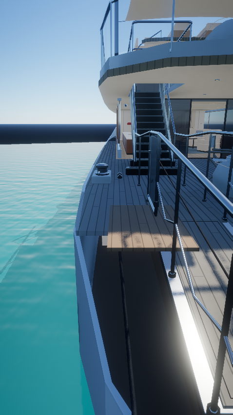
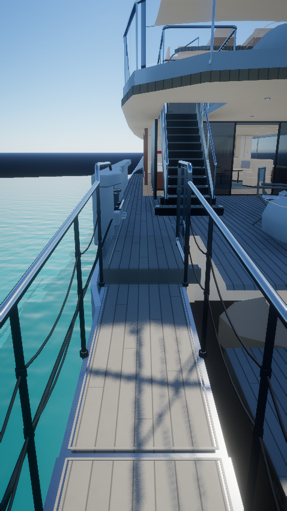
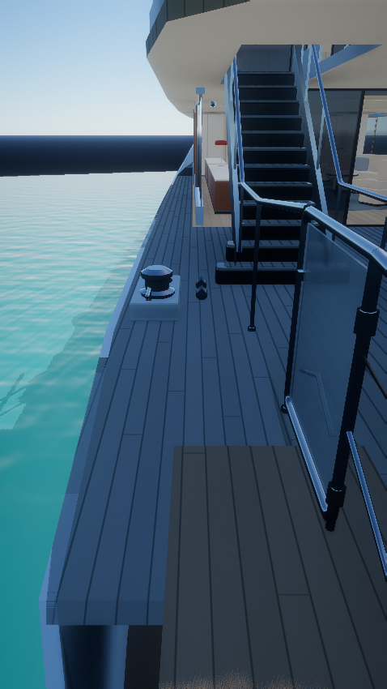
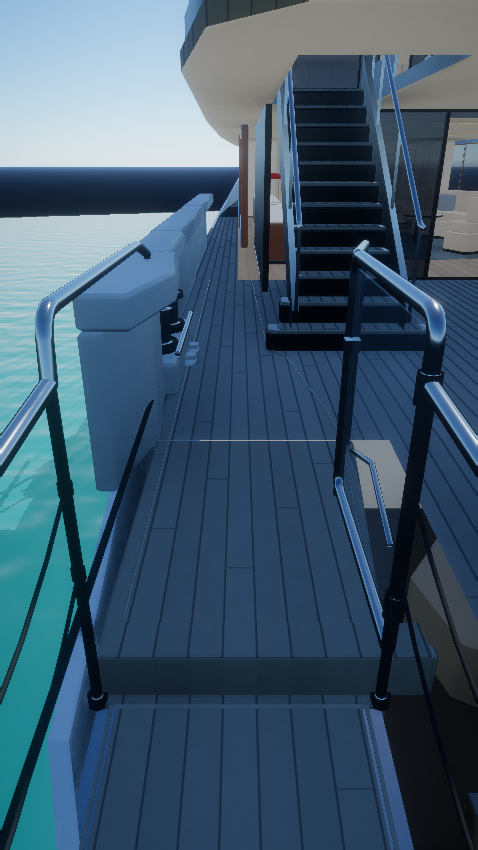
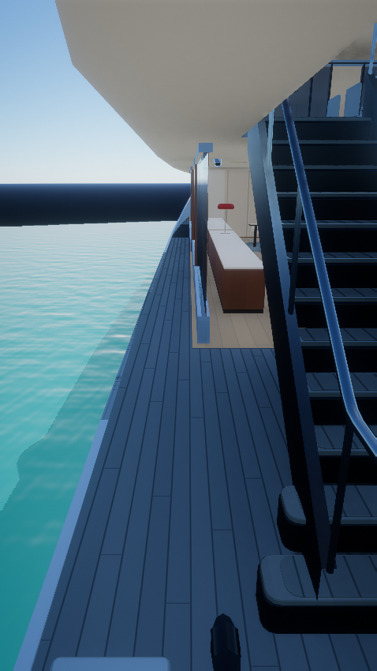
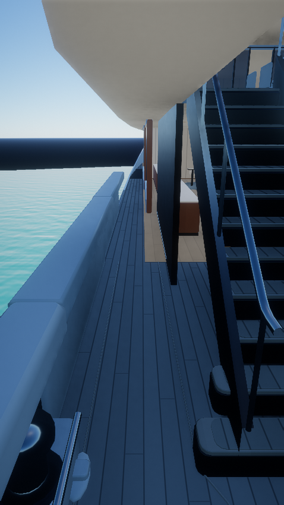
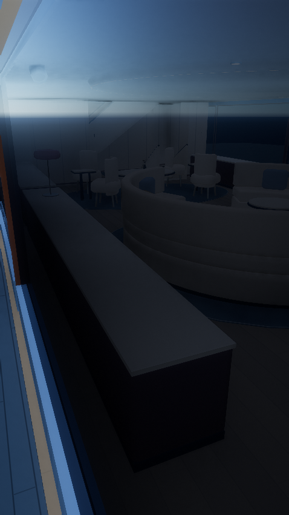
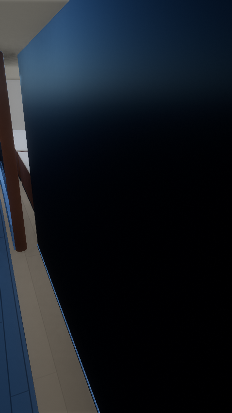
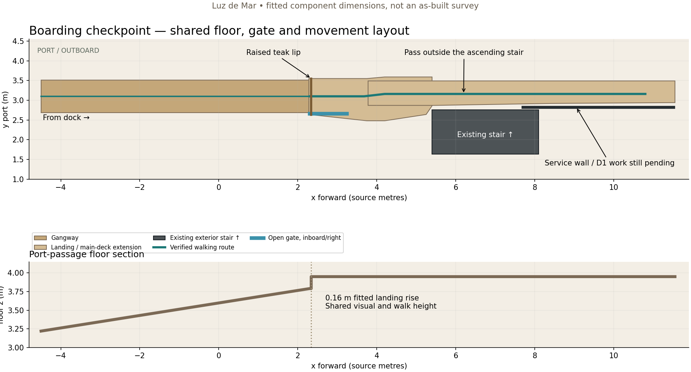

Luz de Mar · boarding checkpoint
The gangway arrives farther outboard at a wider raised landing. The open glazed gate is on the arriving person’s right, and the walking route continues along the port passage beside the ascending staircase.
Walk from the dock →
This is the first reconstruction checkpoint. The exterior service door, louvres, enclosed stair down and lower vestibule are pending. Component dimensions and reference cameras are fitted estimates.
Images are isolated native Vulkan captures of the production yacht, lake, materials and GTAO/TAA/ACES post chain. They omit the full Rocha scenery. Before and after use identical fixed cameras, resolution, water and lighting. Original video framing remains approximate. Browser tests exercise real production navigation and input in a non-rendering fixture; the cloud Chromium GPU cannot render the complete map.
Gangway approach

Before · r21 geometry at the common camera
After · r22 boarding checkpointLanding and gate

Before · r21 geometry at the common camera
After · r22 boarding checkpointPassage outside the stair

Before · r21 geometry at the common camera
After · r22 boarding checkpointPassage wall — later work pending

Before · r21 geometry at the common camera
After · r22 boarding checkpointShared layout

The marked service wall has no reconstructed door or descent yet. The original source asset, cabins, machinery geometry, vessel scale and lake berth are retained.
Validation and cost
| Measure | Before | After |
|---|
| Yacht + boarding batches | 15 | 15 |
| Stored triangles | 173,326 | 177,289 |
| Geometry bytes | 8,159,640 | 8,300,678 |
| Added textures / render passes | — | 0 / 0 |
Passed: new dock/passage round trip with keyboard and touch; all four existing stair routes in both directions; navigation UI at four viewport sizes; 12 yacht test files; native GPU validation.
Detailed timing and limitations: validation.json. Cloud software-renderer timings are not mobile FPS.